Network Load Balancer가 2026년 11월 19일에 발표한 상호 TLS 인증(mTLS)을 서울 리전에서 직접 테스트해 보았습니다. 조건이 다른 클라이언트 인증서 48종의 시험 결과는 문서와 일치했고 mTLS로 늘어난 시간은 ECDSA P-256 인증서에서 0.5ms였습니다. 하지만 설정 변경은 호출 후 31초에서 62초 사이에 적용됐고 인증서를 폐기해도 이미 맺은 연결은 유지됐습니다. 거부된 클라이언트에는 사유가 전달되지 않아 원인은 액세스 로그로만 확인됩니다.I tested the mutual TLS authentication (mTLS) that Network Load Balancer announced on November 19, 2026, in the Seoul Region. The test results for 48 kinds of client certificates matched the documentation, and mTLS added 0.5 ms with an ECDSA P-256 certificate. However, a configuration change took effect 31 to 62 seconds after the call, and connections that were already open stayed open after their certificate was revoked. A rejected client receives no reason, so the cause can be found only in the access logs.
close_notify 7바이트를 보내고 연결을 닫습니다. 사유는 액세스 로그의 tls_verify_status에 남고, 실패 항목에는 인증서의 주체가 기록되지 않았습니다.Reason for rejection: the NLB sends seven bytes of a plaintext close_notify and closes the connection, whatever the reason. The reason is in tls_verify_status of the access logs, and failed entries did not carry the certificate subject.Network Load Balancer(NLB)에 상호 TLS 인증(mTLS)이 필요하다는 요청은 그동안 꾸준히 많았습니다. NLB는 2026년 11월 19일부터 클라이언트 인증서를 검증하는 mTLS를 지원합니다.
mTLS는 서버만 인증서를 제시하는 일반 TLS와 달리 클라이언트도 인증서를 제시해 서로를 확인하는 방식입니다. 이 방식이 필요한 서비스는 HTTP가 아닌 경우가 많습니다. TCP로 접속하는 IoT 장비군, 협력사가 전용 프로토콜로 접속하는 시스템, 워크로드마다 SPIFFE ID를 발급하는 내부 플랫폼이 그 예입니다. Application Load Balancer(ALB)도 mTLS를 지원하지만 HTTPS 리스너에서 동작하므로 이런 서비스에는 적용하기 어렵습니다.
그래서 그전에는 TCP 서비스 앞에서 클라이언트 인증서를 확인하려면 검증용 프록시를 직접 운영해야 했습니다. NLB는 TCP 리스너로 연결을 그대로 넘기고 그 뒤의 NGINX, HAProxy, Envoy 같은 프록시가 TLS를 종료하면서 인증서를 검증하는 구성을 많이 사용했습니다.
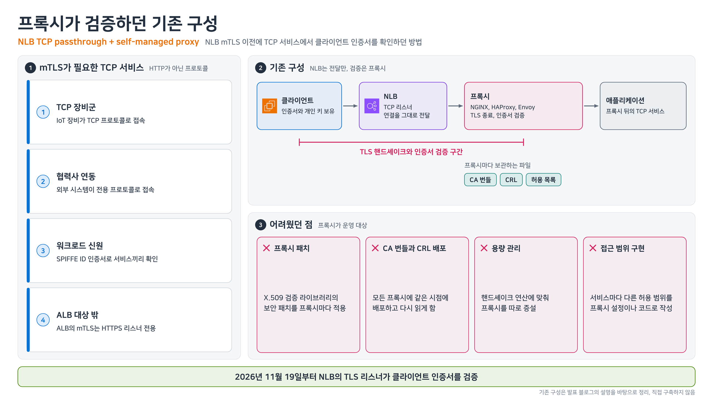
이 구성에서는 프록시가 운영 대상이 됩니다. X.509 검증 라이브러리의 보안 패치를 프록시마다 적용해야 하고 CA 번들과 인증서 폐기 목록(CRL)을 모든 프록시에 같은 시점에 배포해야 합니다. 핸드셰이크 연산에 맞춰 프록시 용량을 따로 관리하고 서비스마다 다른 접근 범위는 프록시 설정이나 애플리케이션 코드로 구현합니다.
발표 블로그도 직접 만든 솔루션과 서드파티 프록시의 유지 부담을 이 기능의 배경으로 설명합니다. 새 기능은 이 검증을 NLB의 TLS 리스너로 옮깁니다. 이 글은 그 동작을 서울 리전에서 테스트한 기록입니다.
01
서울 리전(ap-northeast-2)의 내부 NLB에 mTLS를 활성화하고 조건이 다른 클라이언트 인증서 48종으로 접속했습니다. ECDSA P-256 인증서를 제시한 연결은 mTLS가 없는 연결 구성보다 첫 응답까지 0.5ms 더 걸렸습니다.
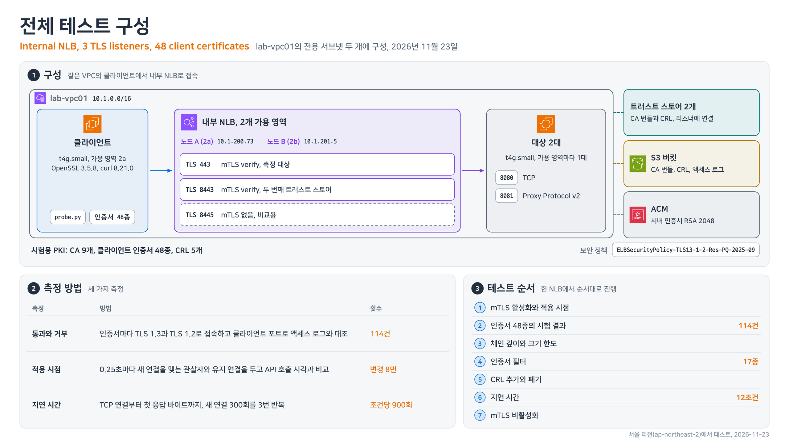
테스트 전에는 두 가지를 예상했습니다. 인증서 검증이 연결 지연을 뚜렷하게 늘린다는 것과 인증서를 폐기하면 그 인증서로 맺은 연결이 곧 끊긴다는 것입니다. 두 예상 모두 맞지 않았습니다. 지연은 클라이언트가 개인 키로 서명하는 시간만큼 늘었고 폐기는 새로 맺는 연결에만 적용됐습니다.
| 항목 | 결과 |
|---|---|
| mTLS로 늘어난 시간 | ECDSA P-256 0.5ms, RSA 2048 3.8ms, RSA 4096 24.9ms |
| 필터 100개, CRL 10만 건의 영향 | 지연 시간 변화 없음 |
| 설정 변경이 적용되는 시간 | 호출 후 31초에서 62초 |
| 변경 전에 맺은 연결 | 유지 (폐기된 인증서의 연결 포함) |
| 거부된 클라이언트에 보이는 것 | 사유 없는 연결 종료 |
| 거부 사유를 확인하는 곳 | 액세스 로그의 tls_verify_status |
| 체인 깊이 4의 기준 | 클라이언트가 보내는 인증서 수 |
표 1. 주요 결과. 2026년 11월 23일 서울 리전, 지연 시간은 같은 가용 영역의 클라이언트에서 조건마다 300회씩 3번 측정한 중앙값 평균의 차이
운영에서 먼저 알아 둘 결과는 거부 사유입니다. 사유가 클라이언트에 전달되지 않으므로 접속에 실패한 쪽에서는 원인을 알 수 없고 NLB의 액세스 로그가 유일한 단서입니다.
02
NLB의 mTLS는 TLS 리스너에서 verify 모드로만 동작합니다. 리스너에 트러스트 스토어(Trust store)를 연결하면 NLB가 핸드셰이크 중에 클라이언트 인증서를 요청하고 검증합니다. 트러스트 스토어는 Amazon S3에 올린 CA 인증서 번들과 CRL로 만드는 리소스입니다.
사용 설명서에 따르면 검사는 세 단계입니다. 먼저 인증서가 트러스트 스토어의 CA까지 이어지는지 확인합니다. 다음으로 클라이언트 인증서 필터(Client certificate identity filters)가 있으면 그중 하나 이상과 일치하는지 봅니다. 마지막으로 CRL에 올라 있는지 확인합니다. 세 단계를 통과한 연결만 대상으로 전달되고 대상에는 인증서 정보가 전달되지 않습니다.
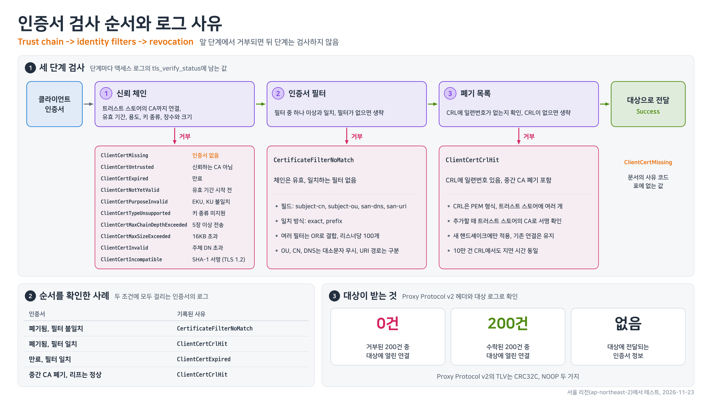
건물 출입에 비유하면 이해하기 쉽습니다. 트러스트 스토어는 출입증을 발급할 수 있는 기관의 목록이고 인증서 필터는 이 층에 들어올 수 있는 부서의 명단이며 CRL은 분실 신고된 출입증의 목록입니다. 경비원은 출입증이 진짜인지 먼저 확인하고 명단을 본 다음 분실 신고 여부를 봅니다. 통과시킨 사람이 누구인지는 사무실에 알려 주지 않습니다. 다만 실제 NLB는 통과시킨 연결의 인증서 주체를 액세스 로그에 남깁니다.
03
설정은 두 단계입니다. CA 번들을 S3에 올려 트러스트 스토어를 만들고 TLS 리스너의 상호 인증 모드를 verify로 바꿉니다. 테스트에는 AWS CLI 2.42.1을 사용했습니다.
$ aws elbv2 create-trust-store \
--name nlb-mtls-lab-ts \
--ca-certificates-bundle-s3-bucket amzn-s3-demo-bucket \
--ca-certificates-bundle-s3-key trust/bundle-root.pem
{
"TrustStores": [
{
"Name": "nlb-mtls-lab-ts",
"TrustStoreArn": "arn:aws:elasticloadbalancing:ap-northeast-2:111122223333:truststore/nlb-mtls-lab-ts/1a2b3c4d5e6f7a8b",
"Status": "CREATING",
"NumberOfCaCertificates": 1,
"TotalRevokedEntries": 0
}
]
}트러스트 스토어가 ACTIVE가 된 뒤 리스너를 수정합니다. 활성화 전과 후의 설정을 같은 조회 항목으로 확인했습니다.
# 활성화 전
$ aws elbv2 describe-listeners --listener-arns $LISTENER_ARN \
--query 'Listeners[0].MutualAuthentication'
{
"Mode": "off"
}
# 활성화
$ aws elbv2 modify-listener --listener-arn $LISTENER_ARN \
--mutual-authentication Mode=verify,TrustStoreArn=$TRUST_STORE_ARN \
--query 'Listeners[0].MutualAuthentication'
{
"Mode": "verify",
"TrustStoreArn": "arn:aws:elasticloadbalancing:ap-northeast-2:111122223333:truststore/nlb-mtls-lab-ts/1a2b3c4d5e6f7a8b",
"IgnoreClientCertificateExpiry": false,
"TrustStoreAssociationStatus": "active",
"AdvertiseTrustStoreCaNames": "off",
"ClientCertificateIdentityFilters": []
}호출은 0.67초 만에 끝났고 응답의 TrustStoreAssociationStatus도 바로 active였습니다. 하지만 인증서 없는 접속이 실제로 거부되기 시작한 시점은 그보다 뒤였습니다. 적용 시간은 뒤의 챕터에서 따로 다룹니다.
04
루트 CA 하나만 넣은 트러스트 스토어에 인증서 48종을 TLS 1.3과 TLS 1.2로 한 번씩 제시했습니다. 접속 114건을 클라이언트 포트 번호로 액세스 로그와 대조해 건마다 사유를 확인했습니다.
| 인증서 조건 | 결과 | 액세스 로그 사유 |
|---|---|---|
| 루트 CA 발급, EKU clientAuth | 통과 | Success |
| 인증서 없음 | 거부 | ClientCertMissing |
| 자체 서명, 다른 CA 발급 | 거부 | ClientCertUntrusted |
| 만료, 유효 기간 시작 전 | 거부 | ClientCertExpired, ClientCertNotYetValid |
| EKU 없음, KU가 digitalSignature나 keyAgreement | 통과 | Success |
| EKU가 serverAuth, emailProtection, anyExtendedKeyUsage뿐 | 거부 | ClientCertPurposeInvalid |
| KU가 keyEncipherment뿐 | 거부 | ClientCertPurposeInvalid |
| RSA 2048부터 8192, ECDSA P-256, P-384, P-521 | 통과 | Success |
| RSA 1024 | 거부 | ClientCertTypeUnsupported |
| Ed25519 | 거부 | ClientCertMissing |
| SHA-1 서명 | 거부 | ClientCertUntrusted(TLS 1.3), ClientCertIncompatible(TLS 1.2) |
| 주체 DN 1,583바이트 | 거부 | ClientCertInvalid |
| 인증서 5장을 보냄 | 거부 | ClientCertMaxChainDepthExceeded |
| 체인 16,006바이트 | 거부 | ClientCertMaxSizeExceeded |
표 2. 인증서 조건별 시험 결과와 액세스 로그의 tls_verify_status 값. 트러스트 스토어에 루트 CA 하나, 필터와 CRL 없음. EKU는 확장 키 용도, KU는 키 용도 확장
시험 결과는 사용 설명서의 요구 사항과 일치했습니다. 문서에서 읽을 수 없던 동작은 세 가지입니다. 인증서를 내지 않은 접속은 사유 코드 표에 없는 ClientCertMissing으로 기록됩니다. 확장 키 용도(EKU)가 anyExtendedKeyUsage뿐인 인증서는 clientAuth로 인정되지 않습니다. Ed25519 인증서는 NLB가 요청하는 서명 알고리즘에 없어서 클라이언트가 보내지 못하고 인증서 없음으로 기록됩니다.
만료된 인증서를 허용하는 설정(IgnoreClientCertificateExpiry)을 활성화하면 유효 기간이 시작되지 않은 인증서도 함께 통과했습니다.
문서의 한도인 체인 깊이 4와 체인 크기 16KB는 검증 경로가 아니라 클라이언트가 보내는 인증서를 기준으로 적용됐습니다.
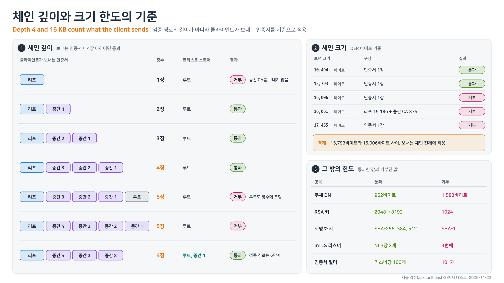
중간 CA가 세 개인 체인은 리프와 중간 CA 세 장을 보내면 통과하고 루트까지 다섯 장을 보내면 거부됩니다. 중간 CA를 트러스트 스토어에 넣으면 클라이언트가 그 인증서를 보내지 않아도 됩니다. 이 방법으로 검증 경로가 6단계인 체인도 네 장만 보내 통과했습니다. 크기는 15,793바이트까지 통과했고 16,006바이트부터 거부됐습니다. 리프와 중간 CA를 합쳐 16,061바이트인 경우도 거부됐습니다.
05
거부된 접속이 클라이언트에 어떻게 보이는지 curl 8.21로 확인했습니다. 서버 인증서도 검증하려고 --resolve로 NLB 주소를 서버 인증서의 이름에 연결했습니다.
$ R="--cacert srv-ca.pem --resolve nlb.mtls-lab.example.com:443:10.1.200.73"
# 유효한 인증서
$ curl -sS $R --cert c01-eng.pem --key c01-eng.key https://nlb.mtls-lab.example.com/
{"msg": "hello from mtls-lab target", "host": "ip-10-1-201-161.ap-northeast-2.compute.internal", "port": 8080, ...}
# 인증서 없음, TLS 1.3
$ curl -sS $R --tlsv1.3 https://nlb.mtls-lab.example.com/
curl: (56) Send failure: Connection reset by peer
# 인증서 없음, TLS 1.2
$ curl -sS $R --tls-max 1.2 https://nlb.mtls-lab.example.com/
curl: (35) TLS connect error: error:0A00010B:SSL routines::wrong version number
# 자체 서명 인증서, TLS 1.3
$ curl -sS $R --tlsv1.3 --cert c04-selfsigned.pem --key c04-selfsigned.key https://nlb.mtls-lab.example.com/
curl: (56) Send failure: Connection reset by peer인증서가 없는 경우와 신뢰하지 않는 인증서, 만료된 인증서의 오류가 모두 같았습니다. 패킷을 캡처해 보니 NLB는 사유와 관계없이 평문 close_notify 7바이트를 보내고 연결을 닫습니다. TLS 1.3에서는 클라이언트의 핸드셰이크가 먼저 끝나므로 첫 요청에서 연결이 끊기고 TLS 1.2에서는 핸드셰이크 도중에 실패합니다.
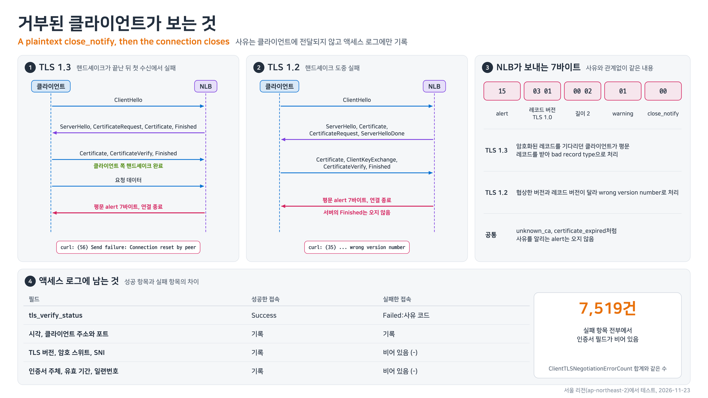
사유는 액세스 로그의 tls_verify_status 필드에 남습니다. 로그를 S3에서 내려받아 사유별로 집계한 명령과 결과입니다.
$ aws s3 sync s3://amzn-s3-demo-bucket/access-logs/ ./logs --exclude "*" --include "*.log.gz"
$ find ./logs -name '*.log.gz' | xargs zcat \
| awk '{for(i=1;i<=NF;i++) if($i ~ /^(Success|Failed:)/){print $i; break}}' \
| sort | uniq -c | sort -rn
25457 Success
3163 Failed:CertificateFilterNoMatch
1938 Failed:ClientCertCrlHit
1379 Failed:ClientCertMissing
994 Failed:ClientCertUntrusted
20 Failed:ClientCertMaxChainDepthExceeded
8 Failed:ClientCertPurposeInvalid
6 Failed:ClientCertMaxSizeExceeded
4 Failed:ClientCertExpired
2 Failed:ClientCertTypeUnsupported
2 Failed:ClientCertNotYetValid
2 Failed:ClientCertInvalid
1 Failed:ClientCertIncompatible성공한 접속에는 인증서의 주체, 유효 기간, 일련번호가 기록됩니다. 실패한 접속 7,519건은 이 세 필드와 TLS 버전, 암호 스위트, SNI가 모두 -였습니다.
tls 3.0 2026-11-23T02:32:51 net/nlb-mtls-lab/0123456789abcdef 0123456789abcdef 10.1.200.81:54978 10.1.201.5:443 13 7 50 259 - arn:aws:acm:ap-northeast-2:111122223333:certificate/EXAMPLE - TLS_AES_128_GCM_SHA256 tlsv13 x25519 nlb.mtls-lab.example.com - - - 2026-11-23T02:32:51 Success "CN=client01.example.com,OU=Engineering,O=MTLS Lab,C=KR" NotBefore=2026-11-23T01:20:40Z;NotAfter=2026-12-23T02:20:40Z 3e2518c1979d1658f941d2f9e9a07dc455cfd8c4
tls 3.0 2026-11-23T02:36:44 net/nlb-mtls-lab/0123456789abcdef 0123456789abcdef 10.1.200.81:46768 10.1.200.73:443 7 - 0 0 - - - - - - - - - - 2026-11-23T02:36:44 Failed:ClientCertExpired "-" - -따라서 실패 로그로 알 수 있는 것은 시각, 클라이언트 주소와 포트, 사유입니다. 어떤 인증서가 거부됐는지는 클라이언트 주소로 추적해야 합니다. 거부된 접속은 대상에 도달하지 않았습니다. 200건을 거부시키는 동안 대상에 열린 클라이언트 연결은 0건이었습니다.
06
인증서 필터는 같은 CA가 발급한 인증서 가운데 일부만 통과시킵니다. 발표 블로그의 예와 같이 조직 단위(OU)가 Production이거나 SPIFFE ID가 prod 네임스페이스인 인증서만 허용했습니다.
$ cat filters.json
{
"Mode": "verify",
"TrustStoreArn": "arn:aws:elasticloadbalancing:ap-northeast-2:111122223333:truststore/nlb-mtls-lab-ts/1a2b3c4d5e6f7a8b",
"ClientCertificateIdentityFilters": [
{ "Field": "subject-ou", "Action": "accept", "MatchType": "exact", "Value": "Production" },
{ "Field": "san-uri", "Action": "accept", "MatchType": "prefix", "Value": "spiffe://example.com/ns/prod/" }
]
}
$ aws elbv2 modify-listener --listener-arn $LISTENER_ARN \
--mutual-authentication file://filters.json \
--query 'Listeners[0].MutualAuthentication.ClientCertificateIdentityFilters[].Value'
[
"Production",
"spiffe://example.com/ns/prod/"
]| 인증서 | 결과 | 근거 |
|---|---|---|
| OU=Engineering, SAN 없음 | 거부 | CertificateFilterNoMatch |
| OU=Production, prod SPIFFE ID | 통과 | 두 필터에 일치 |
| OU=Engineering, prod SPIFFE ID | 통과 | 필터 하나에 일치 (OR) |
| OU가 Engineering과 Production 두 개 | 통과 | 값 하나만 맞으면 일치 |
| OU=production (소문자) | 통과 | OU는 대소문자를 구분하지 않음 |
SPIFFE ID 경로가 /ns/PROD/ | 거부 | URI의 경로는 대소문자를 구분 |
| OU=Production, 만료 | 거부 | ClientCertExpired (필터보다 먼저 검사) |
표 3. 필터 두 개를 적용한 상태의 시험 결과. 마지막 행은 검사 순서에 따른 사유
API를 호출할 때 알아 둘 점이 두 가지 있습니다. modify-listener에서 필터 항목을 생략하면 기존 필터가 유지됩니다. 필터를 지우려면 빈 목록을 명시해야 합니다. 값에는 인쇄 가능한 ASCII만 허용되므로 한글 OU는 필터로 지정할 수 없습니다.
폐기는 CRL을 트러스트 스토어에 추가하는 방식입니다.
$ aws elbv2 add-trust-store-revocations --trust-store-arn $TRUST_STORE_ARN \
--revocation-contents RevocationType=CRL,S3Bucket=amzn-s3-demo-bucket,S3Key=crl/crl-root-1.pem
{
"TrustStoreRevocations": [
{
"TrustStoreArn": "arn:aws:elasticloadbalancing:ap-northeast-2:111122223333:truststore/nlb-mtls-lab-ts/1a2b3c4d5e6f7a8b",
"RevocationId": 1,
"RevocationType": "CRL",
"NumberOfRevokedEntries": 2
}
]
}검사 순서는 로그로 확인했습니다. 폐기됐지만 필터에도 맞지 않는 인증서는 CertificateFilterNoMatch로, 폐기됐고 필터에 맞는 인증서는 ClientCertCrlHit로 기록됐습니다. 중간 CA의 인증서를 폐기하면 그 아래에서 발급한 인증서가 모두 거부됩니다. 트러스트 스토어의 CA가 서명하지 않은 CRL은 추가하는 시점에 거부됩니다.
07
설정을 바꾸는 API는 1초 안에 끝나지만 동작이 바뀌는 데는 시간이 걸립니다. 0.25초마다 새 연결을 맺는 관찰자를 NLB 주소마다 두고 변경 여덟 번의 적용 시점을 측정했습니다.
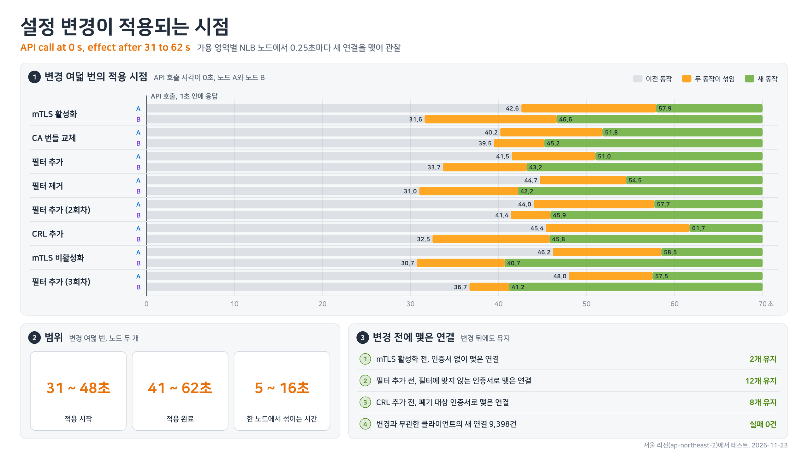
| 변경 | 노드 A: 시작, 완료 | 노드 B: 시작, 완료 |
|---|---|---|
| mTLS 활성화 | 42.6초, 57.9초 | 31.6초, 46.6초 |
| CA 번들 교체 | 40.2초, 51.8초 | 39.5초, 45.2초 |
| 필터 추가 | 41.5초, 51.0초 | 33.7초, 43.2초 |
| 필터 제거 | 44.7초, 54.5초 | 31.0초, 42.2초 |
| 필터 추가 (2회차) | 44.0초, 57.7초 | 41.4초, 45.9초 |
| CRL 추가 | 45.4초, 61.7초 | 32.5초, 45.8초 |
| mTLS 비활성화 | 46.2초, 58.5초 | 30.7초, 40.7초 |
| 필터 추가 (3회차) | 48.0초, 57.5초 | 36.7초, 41.2초 |
표 4. API 호출 시각을 0초로 한 적용 시점. 시작은 새 동작이 처음 관찰된 시각, 완료는 이전 동작이 마지막으로 관찰된 시각
모든 변경이 호출 후 31초에서 48초 사이에 적용되기 시작해 41초에서 62초 사이에 끝났습니다. 가용 영역별 NLB 노드마다 시점이 달랐고 한 노드 안에서도 5초에서 16초 동안 이전 동작과 새 동작이 섞였습니다. 변경과 무관한 클라이언트의 접속은 전환 중에 한 건도 실패하지 않았습니다.
변경 전에 맺은 연결은 끊기지 않았습니다. 필터를 추가한 뒤에도 필터에 맞지 않는 인증서로 맺어 둔 연결 12개가 유지됐습니다. CRL을 추가한 뒤에도 폐기된 인증서로 맺어 둔 연결 8개가 측정을 마친 288초까지 모두 유지됐습니다. 폐기는 새 핸드셰이크에만 적용되므로 이미 연결된 클라이언트를 내보내려면 대상에서 연결을 끊는 절차가 따로 필요합니다.
08
같은 가용 영역의 클라이언트에서 TCP 연결부터 첫 응답 바이트까지의 시간을 조건마다 900회 측정했습니다. 수치는 300회씩 3번 측정한 중앙값의 평균입니다.
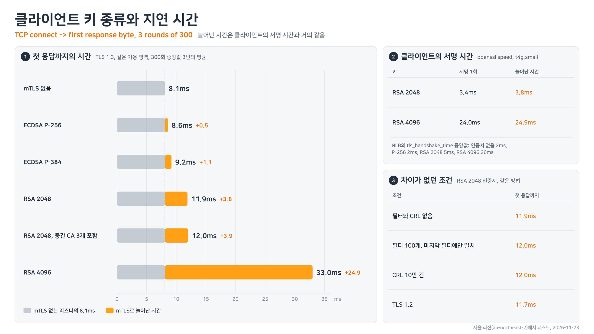
mTLS가 없는 리스너는 8.1ms였습니다. ECDSA P-256 인증서는 8.6ms, RSA 2048은 11.9ms, RSA 4096은 33.0ms였습니다. 늘어난 시간은 클라이언트의 서명 시간과 거의 같습니다. 클라이언트로 사용한 t4g.small에서 openssl speed로 측정한 서명 시간은 RSA 2048이 3.4ms, RSA 4096이 24.0ms였습니다. 필터 100개를 적용하거나 10만 건짜리 CRL을 추가해도 수치는 달라지지 않았습니다.
연결을 자주 새로 맺는 장비군에서는 인증서의 키 종류가 지연과 장비의 연산 부담을 정합니다. 요금에도 차이가 있습니다. 요금 페이지에 따르면 NLB 용량 단위(NLCU) 하나는 일반 TLS 신규 연결을 초당 50건, mTLS 신규 연결을 초당 25건으로 계산합니다. 서울 리전에서는 NLB에 연결한 트러스트 스토어마다 시간당 0.005 USD가 부과됩니다.
09
가장 잘 맞는 경우는 HTTP가 아닌 TCP 서비스에서 인증서 검증용 프록시를 운영하고 있는 환경입니다. 대상이 인증서 내용을 읽을 필요가 없다면 프록시를 없애고 NLB에 검증을 맡길 수 있습니다.
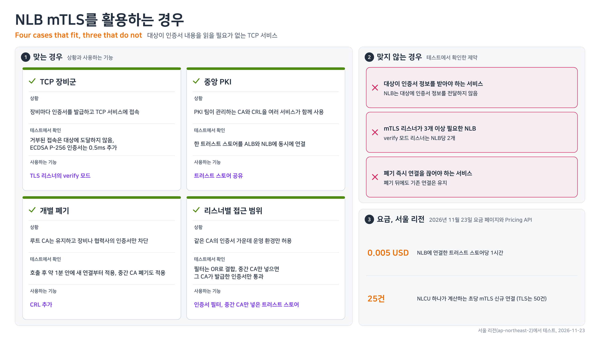
인증서 필터를 사용하거나 중간 CA만 넣은 트러스트 스토어를 사용하면 CA를 나누지 않고도 리스너마다 접근 범위를 다르게 할 수 있습니다. 테스트에서 중간 CA만 넣은 트러스트 스토어는 그 CA가 발급한 인증서만 통과시켰습니다. 이미 ALB에서 mTLS를 사용한다면 차이를 먼저 확인합니다.
| 항목 | ALB | NLB |
|---|---|---|
| 리스너 | HTTPS | TLS |
| 모드 | passthrough, verify | verify |
| 대상에 전달되는 인증서 정보 | X-Amzn-Mtls 헤더 | 없음 |
| 인증서 필터 | 지원하지 않음 | 리스너당 100개 |
| 같은 트러스트 스토어 연결 | 가능 | 가능 (ALB와 동시에 연결) |
| EKU가 serverAuth뿐인 인증서 | 통과 | 거부 |
표 5. ALB와 NLB의 mTLS 비교. 위 세 행은 문서 기준, 아래 세 행은 같은 트러스트 스토어로 테스트한 결과
ALB에서 사용하던 트러스트 스토어를 NLB에도 연결할 수 있으므로 CA 번들과 CRL을 한곳에서 관리합니다. 다만 두 로드 밸런서의 시험 결과가 같지는 않았습니다. ALB에서 옮겨 올 때는 클라이언트 인증서의 EKU를 먼저 확인하는 것을 권고합니다.
10
이 글의 결과는 내부 NLB 한 대와 클라이언트 한 대로 얻은 것입니다. 아래 항목은 테스트하지 않았거나 결과를 얻지 못했습니다.
ClientTLSNegotiationErrorCount에 집계됐고 합계 7,519는 실패 로그 수와 같았습니다.11
NLB mTLS는 TCP 서비스의 클라이언트 인증을 프록시 없이 처리하려는 경우에 적용할 만합니다. 대상이 인증서의 주체나 일련번호를 받아야 한다면 맞지 않습니다. 이 경우 HTTP 서비스는 ALB를 사용하고 그 밖의 서비스는 대상에서 TLS를 종료하는 구성을 유지합니다. 한 NLB에 mTLS 리스너가 세 개 이상 필요한 경우에도 맞지 않습니다. 할당량은 NLB당 두 개이고 늘릴 수 없습니다.
이 글의 지연 시간과 적용 시간은 같은 가용 영역의 클라이언트 한 대에서 측정한 값입니다. 클라이언트의 CPU, 네트워크 거리, 동시 연결 수가 다르면 수치도 달라집니다.
Requests for mutual TLS authentication (mTLS) on Network Load Balancer (NLB) have been steady and many. Since November 19, 2026, NLB supports mTLS, which verifies client certificates.
In ordinary TLS only the server presents a certificate. In mTLS the client presents one as well, so each side verifies the other. Services that need this are often not HTTP: fleets of IoT devices that connect over TCP, systems that partners reach with their own protocol, and internal platforms that issue a SPIFFE ID to every workload. Application Load Balancer (ALB) supports mTLS too, but on HTTPS listeners, so it is hard to apply to such services.
So before that, checking client certificates in front of a TCP service meant running a verifying proxy yourself. A common setup was an NLB that passes the connection on through a TCP listener, with a proxy such as NGINX, HAProxy or Envoy behind it that ends TLS and verifies the certificate.
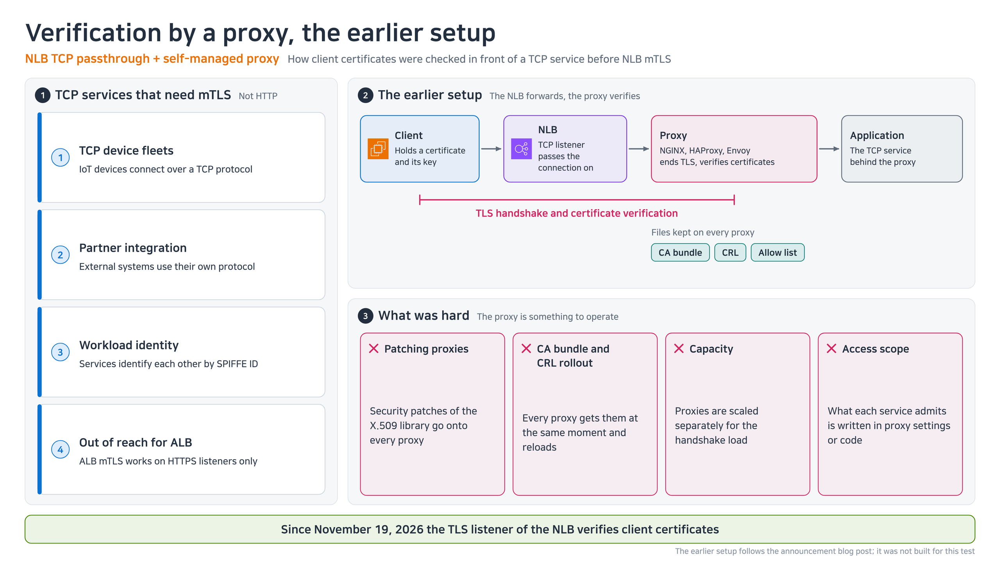
In that setup the proxy is something you operate. Security patches of the X.509 verification library go onto every proxy, and the CA bundle and the certificate revocation list (CRL) have to reach every proxy at the same moment. Proxy capacity is managed separately for the handshake load, and the access scope of each service is written in proxy settings or in application code.
The announcement blog post also names the burden of maintaining home-grown solutions and third-party proxies as the background of the feature. The new feature moves this verification into the TLS listener of the NLB. This post is a record of testing that behaviour in the Seoul Region.
01
I enabled mTLS on an internal NLB in the Seoul Region (ap-northeast-2) and connected with 48 kinds of client certificates, each made for a different condition. A connection that presented an ECDSA P-256 certificate took 0.5 ms longer to the first response than in a setup without mTLS.
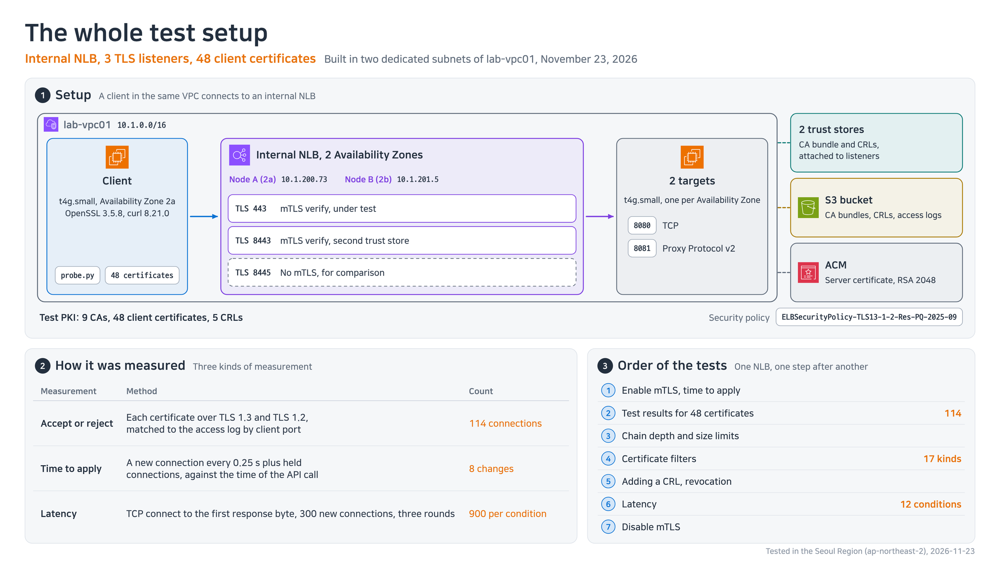
Before the test I expected two things: that certificate verification would add clearly to the connection latency, and that revoking a certificate would soon cut the connections opened with it. Neither was right. Latency grew by the time the client takes to sign with its private key, and revocation applied only to connections opened afterwards.
| Item | Result |
|---|---|
| Time added by mTLS | ECDSA P-256 0.5 ms, RSA 2048 3.8 ms, RSA 4096 24.9 ms |
| Effect of 100 filters or a CRL with 100,000 entries | No change in latency |
| Time for a configuration change to apply | 31 to 62 seconds after the call |
| Connections opened before a change | Stay open (including those of a revoked certificate) |
| What a rejected client sees | The connection ends without a reason |
| Where the reason is found | tls_verify_status in the access log |
| What the chain depth of 4 counts | The certificates the client sends |
Table 1. Main results. Seoul Region, November 23, 2026. Latency is the difference of the mean of three medians of 300 connections per condition, from a client in the same Availability Zone
The result to know first for operations is about the reason for a rejection. It is not passed to the client, so the side that failed to connect cannot tell the cause, and the access log of the NLB is the only clue.
02
mTLS on NLB works on TLS listeners, in verify mode only. When a trust store is attached to a listener, the NLB requests a client certificate during the handshake and verifies it. A trust store is a resource built from a CA certificate bundle and CRLs uploaded to Amazon S3.
According to the User Guide there are three checks. First the NLB verifies that the certificate chains to a CA in the trust store. Next, if client certificate identity filters are configured, it checks that the certificate matches at least one of them. Finally it checks whether the certificate is in a CRL. Only connections that pass all three reach the targets, and no certificate data is passed to the targets.
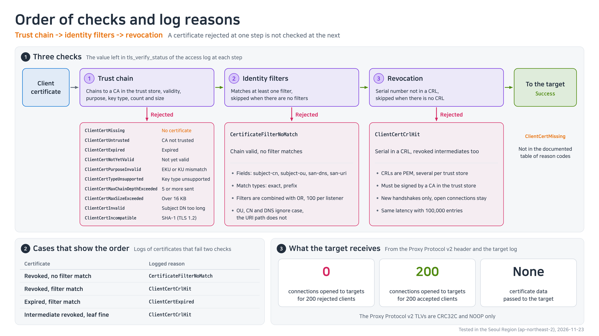
Entering a building is a useful comparison. The trust store is the list of organisations allowed to issue passes, the identity filters are the list of departments allowed on this floor, and the CRL is the list of passes reported lost. The guard first checks that the pass is genuine, then looks at the list, then checks whether it was reported lost. The guard does not tell the office who was let in. The real NLB differs in one point: it records the certificate subject of an admitted connection in the access log.
03
There are two steps. Upload the CA bundle to S3 and create a trust store from it, then set the mutual authentication mode of the TLS listener to verify. I used AWS CLI 2.42.1.
$ aws elbv2 create-trust-store \
--name nlb-mtls-lab-ts \
--ca-certificates-bundle-s3-bucket amzn-s3-demo-bucket \
--ca-certificates-bundle-s3-key trust/bundle-root.pem
{
"TrustStores": [
{
"Name": "nlb-mtls-lab-ts",
"TrustStoreArn": "arn:aws:elasticloadbalancing:ap-northeast-2:111122223333:truststore/nlb-mtls-lab-ts/1a2b3c4d5e6f7a8b",
"Status": "CREATING",
"NumberOfCaCertificates": 1,
"TotalRevokedEntries": 0
}
]
}Once the trust store is ACTIVE, modify the listener. I read the setting before and after with the same query.
# before enabling
$ aws elbv2 describe-listeners --listener-arns $LISTENER_ARN \
--query 'Listeners[0].MutualAuthentication'
{
"Mode": "off"
}
# enable
$ aws elbv2 modify-listener --listener-arn $LISTENER_ARN \
--mutual-authentication Mode=verify,TrustStoreArn=$TRUST_STORE_ARN \
--query 'Listeners[0].MutualAuthentication'
{
"Mode": "verify",
"TrustStoreArn": "arn:aws:elasticloadbalancing:ap-northeast-2:111122223333:truststore/nlb-mtls-lab-ts/1a2b3c4d5e6f7a8b",
"IgnoreClientCertificateExpiry": false,
"TrustStoreAssociationStatus": "active",
"AdvertiseTrustStoreCaNames": "off",
"ClientCertificateIdentityFilters": []
}The call returned in 0.67 seconds and TrustStoreAssociationStatus in the response was already active. But connections without a certificate actually began to be rejected later than that. A later chapter covers the time to apply.
04
With a trust store that held a single root CA, I presented 48 kinds of certificates once over TLS 1.3 and once over TLS 1.2. I matched the 114 connections to the access log by client port and read the reason for each one.
| Certificate condition | Result | Reason in the access log |
|---|---|---|
| Issued by the root CA, EKU clientAuth | Accepted | Success |
| No certificate | Rejected | ClientCertMissing |
| Self-signed, issued by another CA | Rejected | ClientCertUntrusted |
| Expired, not yet valid | Rejected | ClientCertExpired, ClientCertNotYetValid |
| No EKU, KU digitalSignature or keyAgreement | Accepted | Success |
| EKU only serverAuth, emailProtection or anyExtendedKeyUsage | Rejected | ClientCertPurposeInvalid |
| KU only keyEncipherment | Rejected | ClientCertPurposeInvalid |
| RSA 2048 to 8192, ECDSA P-256, P-384, P-521 | Accepted | Success |
| RSA 1024 | Rejected | ClientCertTypeUnsupported |
| Ed25519 | Rejected | ClientCertMissing |
| SHA-1 signature | Rejected | ClientCertUntrusted (TLS 1.3), ClientCertIncompatible (TLS 1.2) |
| Subject DN of 1,583 bytes | Rejected | ClientCertInvalid |
| 5 certificates sent | Rejected | ClientCertMaxChainDepthExceeded |
| Chain of 16,006 bytes | Rejected | ClientCertMaxSizeExceeded |
Table 2. Test result per certificate condition and the tls_verify_status value in the access log. One root CA in the trust store, no filters, no CRL. EKU is the Extended Key Usage extension and KU the Key Usage extension
The test results matched the requirements in the User Guide. Three behaviours could not be read from the documentation. A connection that presents no certificate is logged as ClientCertMissing, which is not in the table of reason codes. A certificate whose Extended Key Usage (EKU) is only anyExtendedKeyUsage is not taken as clientAuth. An Ed25519 certificate is not among the signature algorithms the NLB requests, so the client cannot send it and the connection is logged as having no certificate.
With the setting that admits expired certificates (IgnoreClientCertificateExpiry) enabled, a certificate that was not yet valid was admitted as well.
The documented limits, a chain depth of 4 and a chain size of 16 KB, applied to the certificates the client sends, not to the validated path.
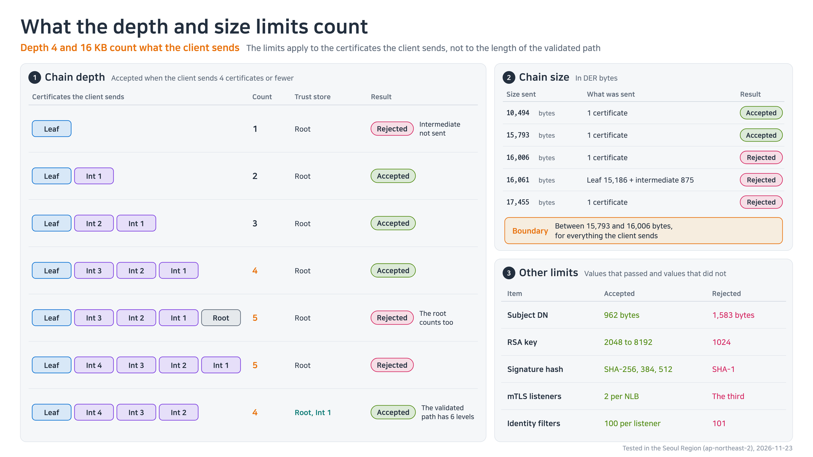
A chain with three intermediate CAs is accepted when the client sends the leaf and the three intermediates, and rejected when it sends five certificates including the root. If an intermediate CA is in the trust store, the client does not have to send that certificate. In this way a chain whose validated path has six levels passed with four certificates sent. For size, 15,793 bytes passed and 16,006 bytes did not. A leaf and an intermediate that add up to 16,061 bytes were rejected too.
05
I used curl 8.21 to see how a rejected connection looks to the client. To verify the server certificate as well, --resolve maps the name in the server certificate to an NLB address.
$ R="--cacert srv-ca.pem --resolve nlb.mtls-lab.example.com:443:10.1.200.73"
# a valid certificate
$ curl -sS $R --cert c01-eng.pem --key c01-eng.key https://nlb.mtls-lab.example.com/
{"msg": "hello from mtls-lab target", "host": "ip-10-1-201-161.ap-northeast-2.compute.internal", "port": 8080, ...}
# no certificate, TLS 1.3
$ curl -sS $R --tlsv1.3 https://nlb.mtls-lab.example.com/
curl: (56) Send failure: Connection reset by peer
# no certificate, TLS 1.2
$ curl -sS $R --tls-max 1.2 https://nlb.mtls-lab.example.com/
curl: (35) TLS connect error: error:0A00010B:SSL routines::wrong version number
# a self-signed certificate, TLS 1.3
$ curl -sS $R --tlsv1.3 --cert c04-selfsigned.pem --key c04-selfsigned.key https://nlb.mtls-lab.example.com/
curl: (56) Send failure: Connection reset by peerThe error was the same with no certificate, with an untrusted certificate and with an expired one. A packet capture showed that the NLB sends seven bytes of a plaintext close_notify and closes the connection, whatever the reason. In TLS 1.3 the client finishes its handshake first, so the connection breaks on the first request. In TLS 1.2 it fails during the handshake.
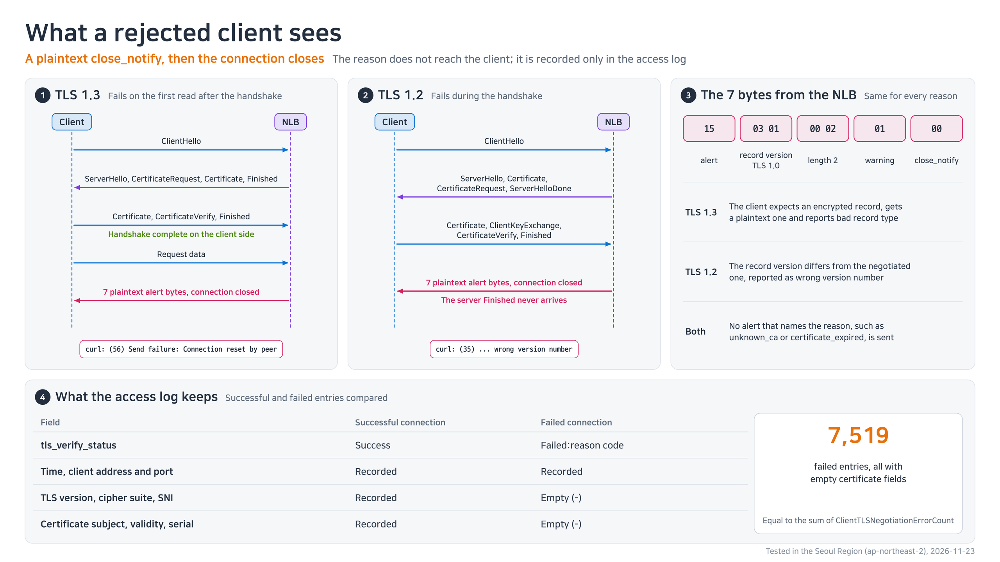
The reason is in the tls_verify_status field of the access log. These are the commands that download the logs from S3 and count the reasons, with their output.
$ aws s3 sync s3://amzn-s3-demo-bucket/access-logs/ ./logs --exclude "*" --include "*.log.gz"
$ find ./logs -name '*.log.gz' | xargs zcat \
| awk '{for(i=1;i<=NF;i++) if($i ~ /^(Success|Failed:)/){print $i; break}}' \
| sort | uniq -c | sort -rn
25457 Success
3163 Failed:CertificateFilterNoMatch
1938 Failed:ClientCertCrlHit
1379 Failed:ClientCertMissing
994 Failed:ClientCertUntrusted
20 Failed:ClientCertMaxChainDepthExceeded
8 Failed:ClientCertPurposeInvalid
6 Failed:ClientCertMaxSizeExceeded
4 Failed:ClientCertExpired
2 Failed:ClientCertTypeUnsupported
2 Failed:ClientCertNotYetValid
2 Failed:ClientCertInvalid
1 Failed:ClientCertIncompatibleA successful connection is logged with the subject, the validity period and the serial number of the certificate. In all 7,519 failed entries these three fields, the TLS version, the cipher suite and the SNI were -.
tls 3.0 2026-11-23T02:32:51 net/nlb-mtls-lab/0123456789abcdef 0123456789abcdef 10.1.200.81:54978 10.1.201.5:443 13 7 50 259 - arn:aws:acm:ap-northeast-2:111122223333:certificate/EXAMPLE - TLS_AES_128_GCM_SHA256 tlsv13 x25519 nlb.mtls-lab.example.com - - - 2026-11-23T02:32:51 Success "CN=client01.example.com,OU=Engineering,O=MTLS Lab,C=KR" NotBefore=2026-11-23T01:20:40Z;NotAfter=2026-12-23T02:20:40Z 3e2518c1979d1658f941d2f9e9a07dc455cfd8c4
tls 3.0 2026-11-23T02:36:44 net/nlb-mtls-lab/0123456789abcdef 0123456789abcdef 10.1.200.81:46768 10.1.200.73:443 7 - 0 0 - - - - - - - - - - 2026-11-23T02:36:44 Failed:ClientCertExpired "-" - -So a failed entry tells the time, the client address and port, and the reason. Which certificate was rejected has to be traced from the client address. Rejected connections did not reach the targets. While 200 connections were rejected, no client connection was opened to a target.
06
Identity filters admit only some of the certificates issued by the same CA. As in the example of the announcement blog post, I admitted only certificates whose Organizational Unit (OU) is Production or whose SPIFFE ID is in the prod namespace.
$ cat filters.json
{
"Mode": "verify",
"TrustStoreArn": "arn:aws:elasticloadbalancing:ap-northeast-2:111122223333:truststore/nlb-mtls-lab-ts/1a2b3c4d5e6f7a8b",
"ClientCertificateIdentityFilters": [
{ "Field": "subject-ou", "Action": "accept", "MatchType": "exact", "Value": "Production" },
{ "Field": "san-uri", "Action": "accept", "MatchType": "prefix", "Value": "spiffe://example.com/ns/prod/" }
]
}
$ aws elbv2 modify-listener --listener-arn $LISTENER_ARN \
--mutual-authentication file://filters.json \
--query 'Listeners[0].MutualAuthentication.ClientCertificateIdentityFilters[].Value'
[
"Production",
"spiffe://example.com/ns/prod/"
]| Certificate | Result | Why |
|---|---|---|
| OU=Engineering, no SAN | Rejected | CertificateFilterNoMatch |
| OU=Production, prod SPIFFE ID | Accepted | Matches both filters |
| OU=Engineering, prod SPIFFE ID | Accepted | Matches one filter (OR) |
| Two OUs, Engineering and Production | Accepted | One matching value is enough |
| OU=production (lower case) | Accepted | The OU is not case-sensitive |
SPIFFE ID path /ns/PROD/ | Rejected | The path of a URI is case-sensitive |
| OU=Production, expired | Rejected | ClientCertExpired (checked before the filters) |
Table 3. Test results with the two filters in place. The last row shows the reason that follows from the order of checks
Two points are worth knowing when calling the API. If modify-listener is called without the filter list, the existing filters stay. To remove them, pass an empty list. Values may contain printable ASCII only, so an OU written in Korean cannot be used in a filter.
Revocation works by adding a CRL to the trust store.
$ aws elbv2 add-trust-store-revocations --trust-store-arn $TRUST_STORE_ARN \
--revocation-contents RevocationType=CRL,S3Bucket=amzn-s3-demo-bucket,S3Key=crl/crl-root-1.pem
{
"TrustStoreRevocations": [
{
"TrustStoreArn": "arn:aws:elasticloadbalancing:ap-northeast-2:111122223333:truststore/nlb-mtls-lab-ts/1a2b3c4d5e6f7a8b",
"RevocationId": 1,
"RevocationType": "CRL",
"NumberOfRevokedEntries": 2
}
]
}The logs confirmed the order of checks. A certificate that was revoked and matched no filter was logged as CertificateFilterNoMatch, and one that was revoked and matched a filter as ClientCertCrlHit. Revoking the certificate of an intermediate CA rejects every certificate issued under it. A CRL that is not signed by a CA in the trust store is refused when it is added.
07
An API call that changes a setting returns within a second, but the behaviour takes longer to change. I placed an observer that opens a new connection every 0.25 seconds on each NLB address and measured when eight changes took effect.
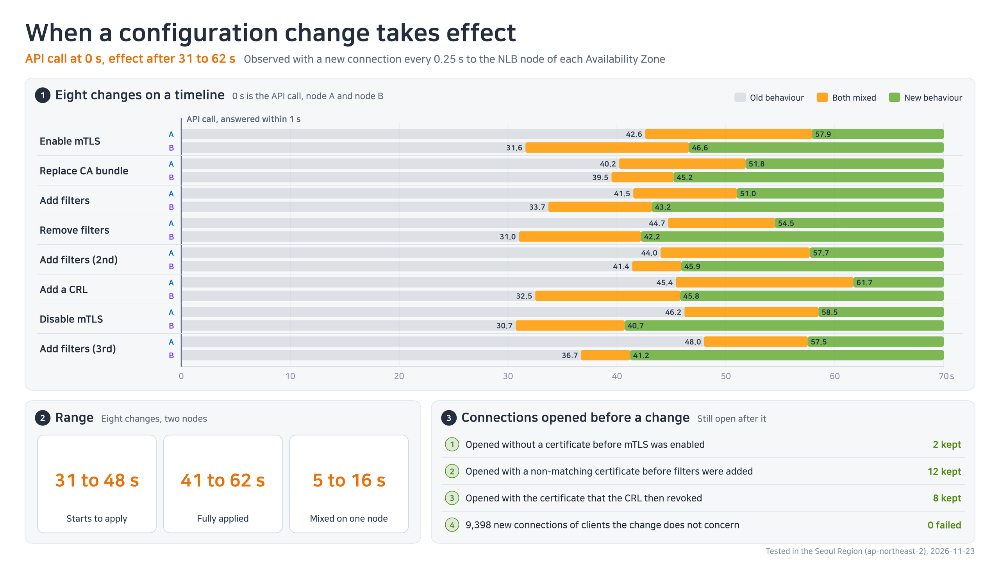
| Change | Node A: start, complete | Node B: start, complete |
|---|---|---|
| Enable mTLS | 42.6 s, 57.9 s | 31.6 s, 46.6 s |
| Replace the CA bundle | 40.2 s, 51.8 s | 39.5 s, 45.2 s |
| Add filters | 41.5 s, 51.0 s | 33.7 s, 43.2 s |
| Remove filters | 44.7 s, 54.5 s | 31.0 s, 42.2 s |
| Add filters (2nd time) | 44.0 s, 57.7 s | 41.4 s, 45.9 s |
| Add a CRL | 45.4 s, 61.7 s | 32.5 s, 45.8 s |
| Disable mTLS | 46.2 s, 58.5 s | 30.7 s, 40.7 s |
| Add filters (3rd time) | 48.0 s, 57.5 s | 36.7 s, 41.2 s |
Table 4. When each change took effect, with the API call at 0 s. Start is when the new behaviour was first seen, complete is when the old behaviour was last seen
Every change began to apply 31 to 48 seconds after the call and was complete after 41 to 62 seconds. The NLB node of each Availability Zone switched at a different time, and on one node the old and the new behaviour were mixed for 5 to 16 seconds. No connection of a client that the change did not concern failed during the switch.
Connections opened before a change were not cut. After filters were added, 12 connections opened with a certificate that did not match the filters stayed open. After a CRL was added, all 8 connections opened with the revoked certificate stayed open until the measurement ended at 288 seconds. Revocation applies only to new handshakes, so removing a client that is already connected needs a separate step that closes the connection at the target.
08
From a client in the same Availability Zone I measured the time from TCP connect to the first response byte, 900 times per condition. Each figure is the mean of three medians of 300 connections.
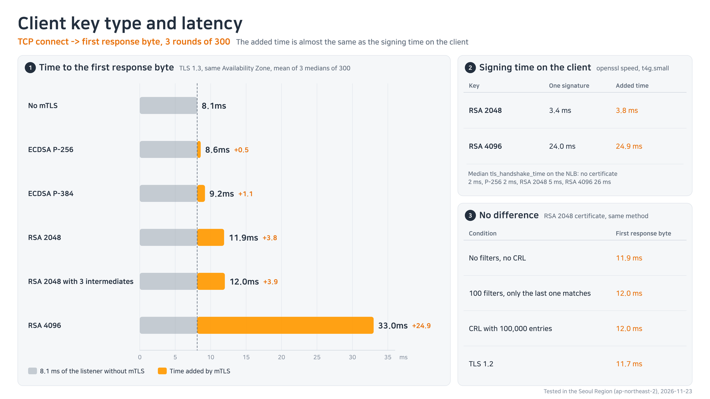
The listener without mTLS took 8.1 ms. An ECDSA P-256 certificate gave 8.6 ms, RSA 2048 gave 11.9 ms and RSA 4096 gave 33.0 ms. The added time is almost the same as the signing time on the client. On the t4g.small used as the client, openssl speed measured 3.4 ms for an RSA 2048 signature and 24.0 ms for RSA 4096. Applying 100 filters or adding a CRL with 100,000 entries did not change the figures.
For a device fleet that reconnects often, the key type of the certificate decides the latency and the computing load on the device. The price differs as well. According to the pricing page, one NLB capacity unit (NLCU) covers 50 new TLS connections per second but 25 new mTLS connections per second. In the Seoul Region each trust store associated with an NLB is charged 0.005 USD per hour.
09
The best fit is a TCP service that is not HTTP and runs a proxy only to verify certificates. If the targets do not need to read the certificate, the proxy can go and the NLB can do the verification.
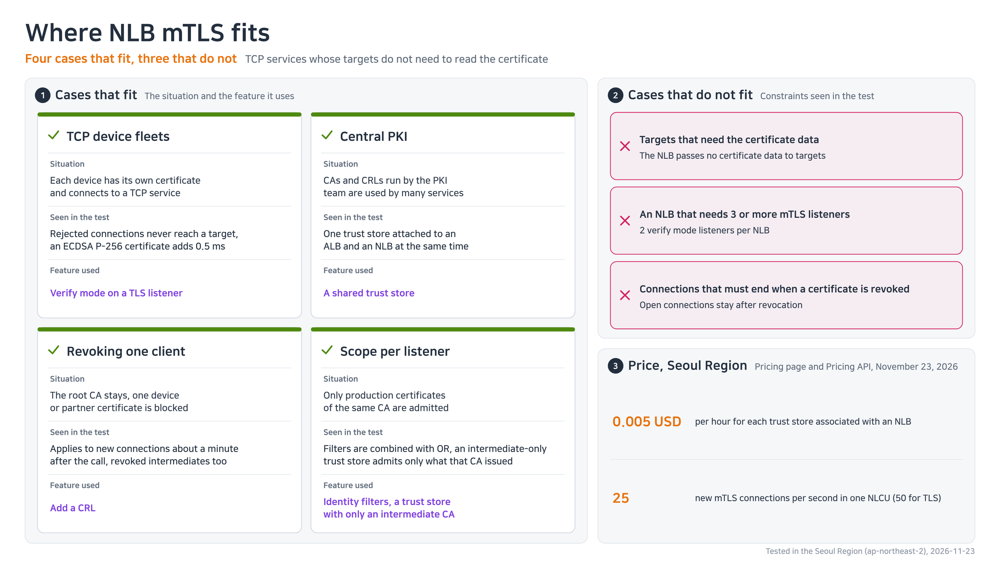
With identity filters, or with a trust store that holds only an intermediate CA, each listener can have its own access scope without splitting the CA. In the test a trust store with only an intermediate CA admitted only certificates issued by that CA. If you already use mTLS on ALB, check the differences first.
| Item | ALB | NLB |
|---|---|---|
| Listener | HTTPS | TLS |
| Modes | passthrough, verify | verify |
| Certificate data passed to targets | X-Amzn-Mtls headers | None |
| Identity filters | Not supported | 100 per listener |
| Attaching the same trust store | Possible | Possible (together with the ALB) |
| Certificate with EKU serverAuth only | Accepted | Rejected |
Table 5. mTLS on ALB and on NLB. The first three rows follow the documentation, the last three are results of testing with the same trust store
A trust store used on an ALB can be attached to an NLB as well, so the CA bundle and the CRLs are managed in one place. The test results of the two load balancers were not the same, though. When moving from ALB, I recommend checking the EKU of the client certificates first.
10
The results in this post come from one internal NLB and one client. I did not test the items below, or did not get a result for them.
ClientTLSNegotiationErrorCount, and its sum of 7,519 equalled the number of failed log entries.11
NLB mTLS is worth applying when you want to authenticate the clients of a TCP service without a proxy. It does not fit when the targets must receive the subject or the serial number of the certificate. In that case use ALB for an HTTP service and keep ending TLS at the target for other services. It does not fit either when one NLB needs three or more mTLS listeners. The quota is two per NLB and cannot be raised.
The latency and the time to apply in this post were measured from one client in the same Availability Zone. They change with the client CPU, the network distance and the number of concurrent connections.
| No. | 출처Source | 종류Kind | 확인한 날Checked |
|---|---|---|---|
| 1 | AWS Network Load Balancer now supports mutual TLS authentication | What's NewWhat's New | 2026-11-23 |
| 2 | Introducing mTLS for Network Load Balancer | AWS 블로그AWS blog | 2026-11-23 |
| 3 | Authenticate clients using mutual TLS for Network Load Balancers | 공식 문서AWS docs | 2026-11-23 |
| 4 | Configure mutual TLS | 공식 문서AWS docs | 2026-11-23 |
| 5 | Client certificate identity filters | 공식 문서AWS docs | 2026-11-23 |
| 6 | Access logs for your Network Load Balancer | 공식 문서AWS docs | 2026-11-23 |
| 7 | Quotas for your Network Load Balancers | 공식 문서AWS docs | 2026-11-23 |
| 8 | Listeners for your Network Load Balancers | 공식 문서AWS docs | 2026-11-23 |
| 9 | CloudWatch metrics for your Network Load Balancer | 공식 문서AWS docs | 2026-11-23 |
| 10 | Mutual authentication with TLS in Application Load Balancer | 공식 문서AWS docs | 2026-11-23 |
| 11 | Elastic Load Balancing pricing | 요금 페이지Pricing page | 2026-11-23 |